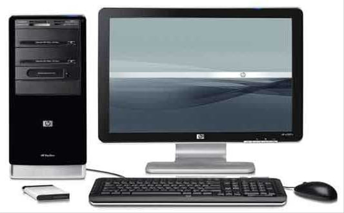
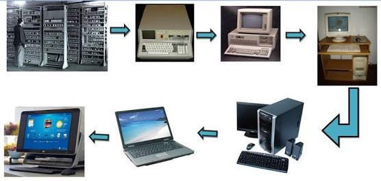

Definsi

Komputer merupakan suatu perangkat keras yang digunakan oleh para penggunanya untuk mempermudah suatu pekerjaan yang didalamnya terdapat sistem operasi, program aplikasi, dan perangkat lunak lainnya.
Menurut Robert H. Blissmer, komputer adalah suatu alat elektronik yang mampu melakukan beberapa tugas seperti menerima input, memproses input sesuai dengan perintah yang diberikan, menyimpan perintah-perintah dan hasil
pengolahannya, serta menyediakan hasil output dalam bentuk informasi.
Sejarah

Komputer mengalami pembaharuan dari tahun ke tahun. Mulai dari komputer yang pertama kali muncul hingga menjadi komputer yang ada pada zaman sekarang ini.
Pekembangan komputer dimulai dari generasi awal semenjak diciptakannya sebuah komputer. Perkembangan ini terbagi menjadi 5 generasi, yaitu:
Generasi Pertama (1945-1955)
Pada tahun 1946 komputer diciptakan dengan tabung vakum sebagai komponen utamanya. Beratnya hampir 30 ton. Tapi hal ini sangat tidak efisien karena membutuhkan daya listrik yang besar serta panas yang berlebih.
Generasi pertama ini, masih menggunakan bahasa mesin yang hanya bisa dimengerti oleh komputer itu sendiri. Di generasi ini bentuk komputer dibuat dalam bentuk mainframe atau komputer yang sangat besar ukurannya.
Generasi Kedua (1955-1965)
Pada generasi kedua ini mulai ditemukannya transistor dan langsung diterapkan pada komputer. Di generasi ini komputer sudah menggunakan teknologi transistor.
Beberapa kelebihan yang dimiliki adalah ukuran yang lebih kecil, tidak terlalu panas, dan minim tingkat kegagalan.
Generasi ini sudah tidak lagi menggunakan bahasa mesin seperti sebelumnya. Digantikan dengan bahasa FORTRAN dan CBOL.
Sehingga bisa dikatakan bahwa komputer transitor adalah lebih baik dibanding tabung vakum.
Generasi Ketiga (1965-1980)
Generasi ini disebut dengan generasi ketiga. Bentuk transistor diperkecil kemudian dietakkan pada IC bersama beberapa resistor dan kapasitor. Pertama kali dikembangkan oleh Jack Kilby yang merupakan seorang insinyur listrik.
Kelebihannya adalah lebih cepat dan efisien. Juga merupakan komputer yang pertama kali menggunakan monitor dan keyboard.
Generasi keempat (1980-Sekarang)
Sejarah komputer dan perkembangannya selanjutnya memasuki masa microprosessor. Yang mana, masih digunakan oleh beberapa masyarakat Indonesia hingga saat ini.
Beberapa contoh komputer generasi ke empat ini adalah IBM Pentium II, Apple II, IBM 370, IBM PC/386 dan lain-lain.
Generasi Kelima (1980-Sekarang)
Komputer generasi kelima merupakan komputer yang mulai mengunakan mikroprosessor dengan teknologi ULSI (Ultra Large Scale Integration). Teknologi yang memungkinkan pemadatan 10 juta komponen didalam sebuah mikroprocessor.
Komputer ini mulai berkembang sejak tahun 1980 hingga saat ini. Ciri lain komputer generasi kelima adalah penggunaan Artificial Intelligence (Kecerdasan Buatan).
Dengan menggunakan teknologi ini, komputer dapat dilatih untuk menyelesaikan tugas-tugas tertentu dengan memproses sejumlah besar data dan mengenali pola dalam data.
Sistem

Sistem Komputer adalah kumpulan perangkat-perangkat komputer yang saling berhubungan dan berinteraksi satu sama lain untuk melakukan proses pengolahan data, sehingga dapat menghasilkan informasi yang diharapkan oleh penggunanya.
Perangkat yang terdapat pada Sistem Komputer diantaranya Hardware , Software , dan Brainware. Ketiga hal tersebut memiliki fungsinya masing-masing pada sistem komputer, pada saat beroperasi pun ketiganya saling bergantung dan saling mendukung satu sama lain,
seperti hardware tidak dapat berinteraksi dengan brainware tanpa software dan juga sebaliknya.
Hardware
Hardware atau bisa disebut juga dengan perangkat keras adalah suatu perangkat elektronik yang ada pada komputer, bisa dilihat secara kasat mata dan mampu disentuh secara fisik.
Perangkat ini memilki 3 jenis yaitu; perangkat input, perangkat process, dan perangkat output.
Software
Software atau perangkat lunak adalah kumpulan data elektronik yang disimpan dan diatur oleh komputer, data elektronik yang disimpan komputer dapat berupa program yang berguna untuk menjalankan suatu perintah.
Perangkat Lunak ini bersifat tidak dapat dipegang, dalam penggunaannya pun perangkat lunak di terbagi 4 yaitu; sistem operasi, program aplikasi, bahasa pemrograman, dan program bantu.
Brainware
Brainware adalah orang yang menggunakan atau mengoperasikan sebuah perangkat komputer. Brainware sering juga disebut sebagai perangkat intelektual yang memakai dan menjelajahi kemampuan Hardware ataupun Software.
Pengguna komputer biasa disebut dengan user namun user sendiri ada macamnya, yaitu; programmer, administrator, dan operator.